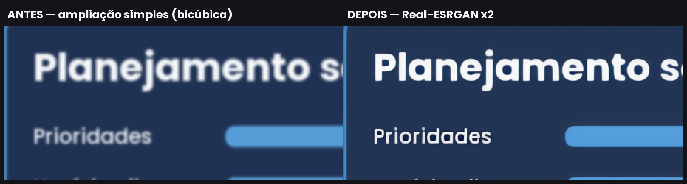
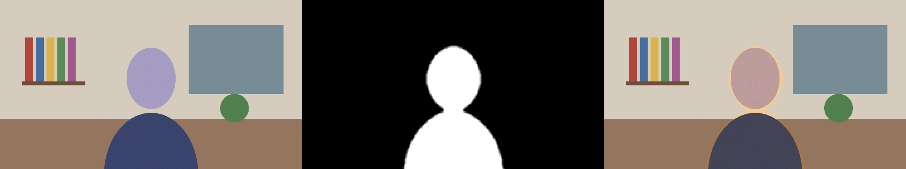

O desafio
Reduzir etapas repetitivas na edição e facilitar a produção de diferentes formatos de conteúdo.
Sou Jenifer. Desenvolvo soluções digitais para simplificar tarefas e transformar necessidades operacionais em soluções práticas.
Conheça meus projetosMinha atuação conecta operações, organização de processos e inteligência artificial. Crio sistemas e skills com ferramentas como Claude e Lovable, buscando melhorar o cotidiano das equipes.
Uma solução local para edição de aulas, reaproveitamento de conteúdo e melhoria de imagens, com Claude Code, Python e FFmpeg.
Reduzir etapas repetitivas na edição e facilitar a produção de diferentes formatos de conteúdo.
Transcrição, cortes, normalização de áudio, legendas e tratamento visual em um sistema de edição.
Materiais fictícios de demonstração.
Aula bruta
Aula editada
Corte vertical com legendas
49% de redução na duração do vídeo de demonstração. Não representa economia de tempo de trabalho medida.


Ver vídeo corrigido. Há um halo discreto na demonstração.